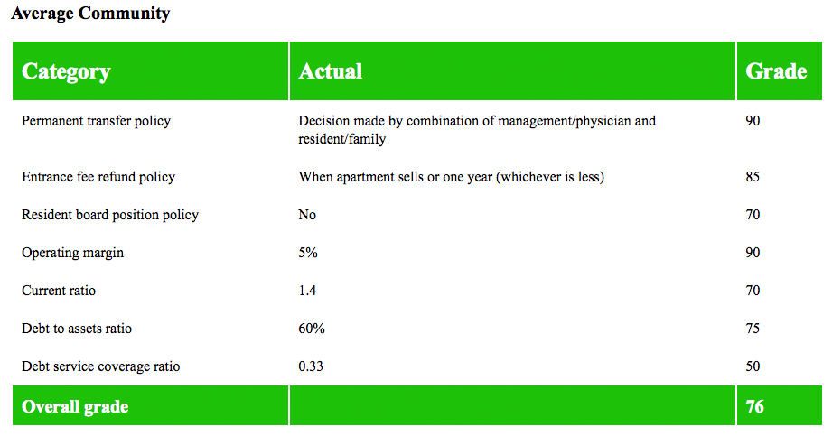

What is "Rate A CCRC"?
At present, there are no rating sites for Continuing Care Retirement Communities (CCRCs);
consumers who want to understand more about the financial stability of a potential
community have nowhere to turn for help.
We’re going to change that. By partnering with state regulatory agencies, Rate a
Retirement Community will give consumers free access to simple, easy to understand CCRC
ratings.
Here are some sample CCRC ratings:

What’s in it for the state CCRC agency?
Right now, our platform allows state regulators to do the following:
Provide better information for CCRC consumers:
By incentivizing CCRCs in your state to use our service, you help consumers make the
right choices about their move to senior housing.
Track CCRC financial performance over time:
Our multi-year financial displays show year-over-year financial data,
allowing greater depth in annual audits or ongoing oversight.
Flag CCRCs that are at risk! In the past,
financial information has been compiled using paper copies of records. Now you can
automatically review hundreds of records and check for communities that have risky
financial situations.